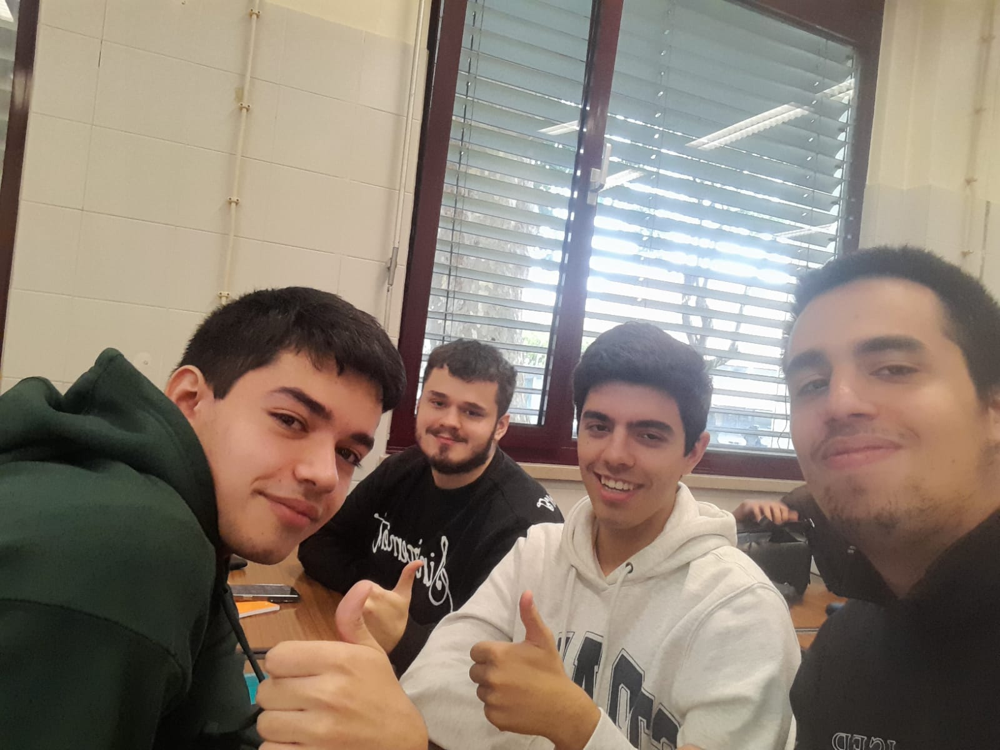

Sobre nós
Olá, eu sou o responsável pelo design deste site e vou agora contar um pouco sobre a nossa equipa.
Nós somos um grupo de quatro alunos do primeiro ano de engenharia informática e este projeto é um dos trabalhos que nos foi dado na disciplina LAPR1.
Quando nos foi dada a liberdade de escolher um tema, decidimos que o melhor a fazer era procurar por problemas dentro da nossa comunidade do ISEP.
Após uma breve discussão, apercebemo-nos que nós não tivemos muitas oportunidades para conversar com pessoas de anos acima que nos pudessem tirar as dúvidas. Aproveitando o design de fórum, surgiu, simultaneamente, a ideia de criar um espaço onde os grupos da nossa comunidade pudessem anunciar atividades ou planejar encontros.
Espero que tenha gostado de ouvir os nossos planos para o futuro deste projeto.